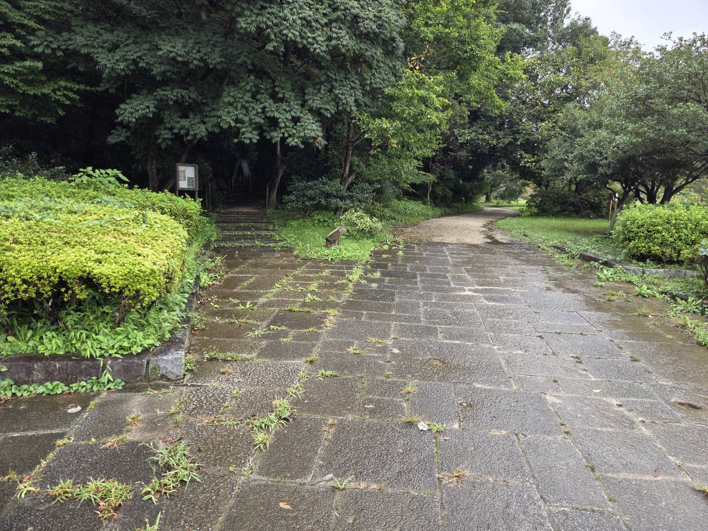
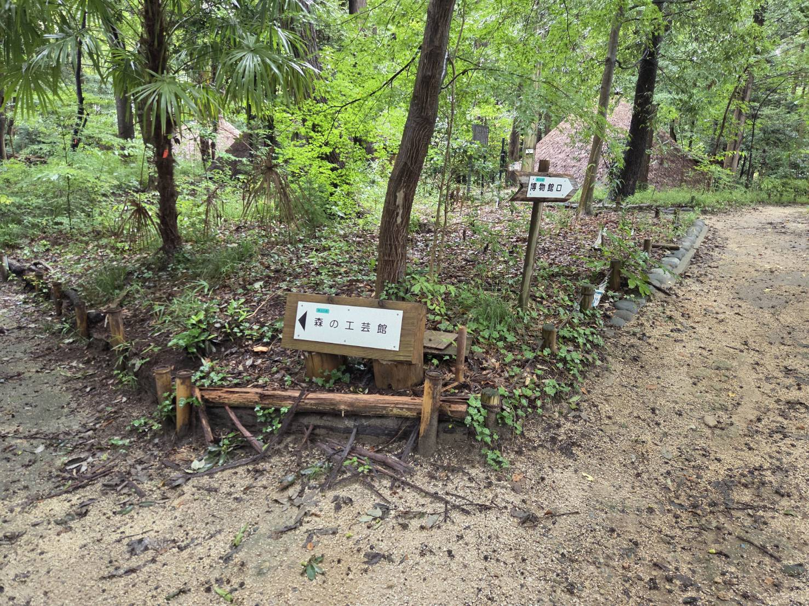
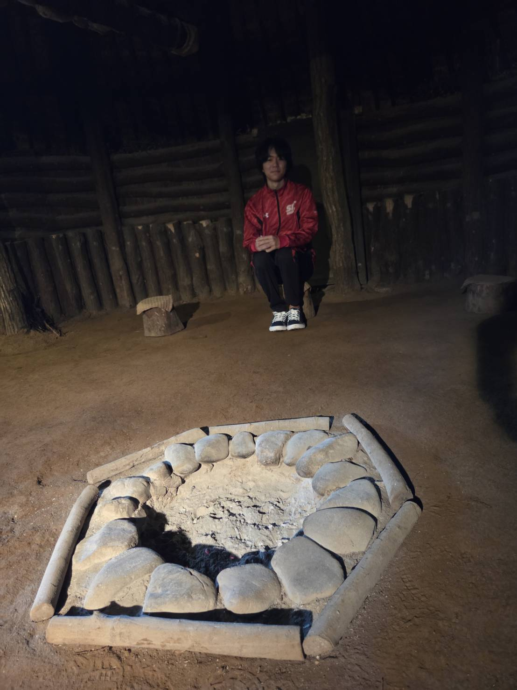
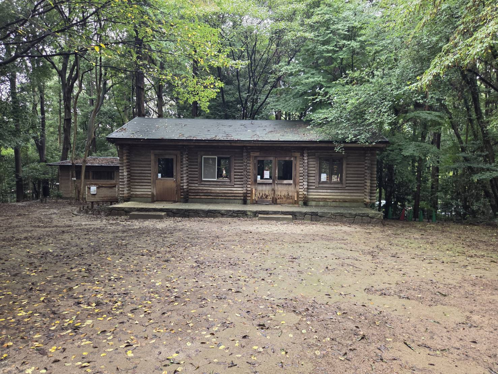
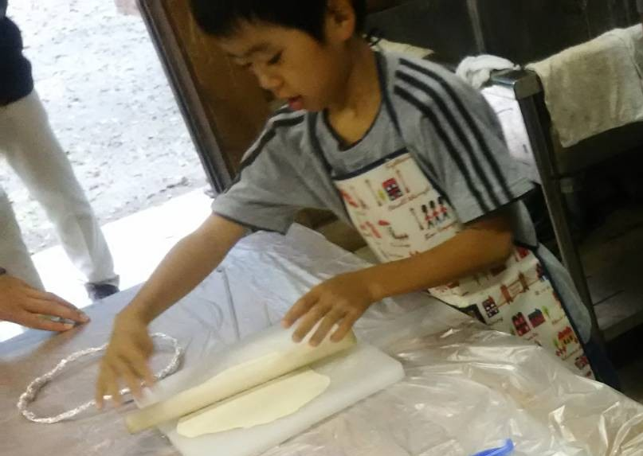
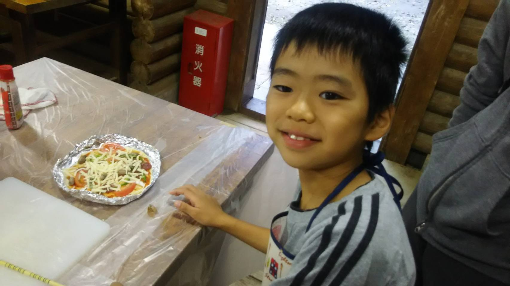
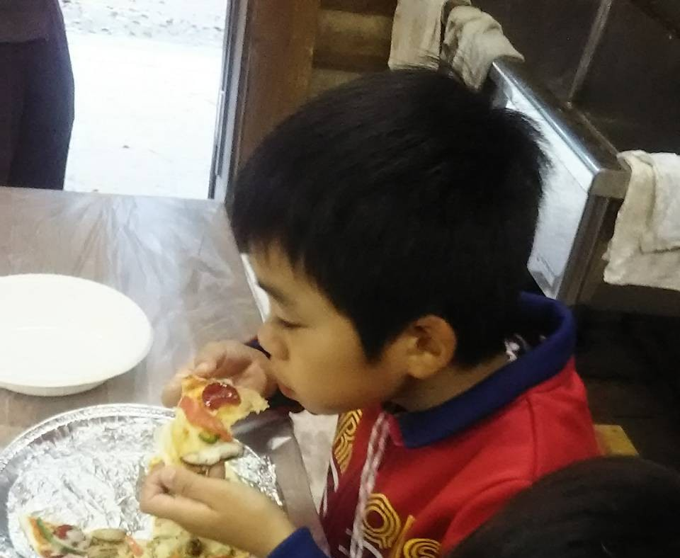

わざわざどうも。ここでは私とどんぐりピザの思い出を書いていく。

千駄堀池の近くにある鬱蒼とした階段を登っていく。

ついに到着。縄文の森‼
奥に見えるのが、皆様知っているであろう竪穴式住居。縄文を代表する住居様式そのものである。
なぜ縄文？と思われるかもしれないが、じつはこの周辺には昔集落があり、発掘された一部を参考に再建したそうだ。
縄文時代、食は主に採取によって手に入れていたため、どんぐりは当時非常にメジャーな食べ物であったのだ。まさにオリジン！

建物内は当時を再現しており、中央には炉がある。
中は見学でき、どんぐりを挽く体験もできる。↓動画を参照↓

さらに先へ進むと小屋が出てくる。
ここには調理器具があり、先生とピザを焼いたのを未だに覚えている。

『もうそろそろ雨が降るよ？
外にいると風邪引いちゃうよ？
そうだ！僕、今ピザ焼いてるんだよ！
お兄ちゃんも一緒にどぉ？
食べたいならオススメ天然だよー。』

『えぇぇ～～～つまんないの！
あ、もしかしてお兄ちゃんもピザ作ってた⁉
……え？泣いてる？』

『あ、そう。なんだかさみしいな。』